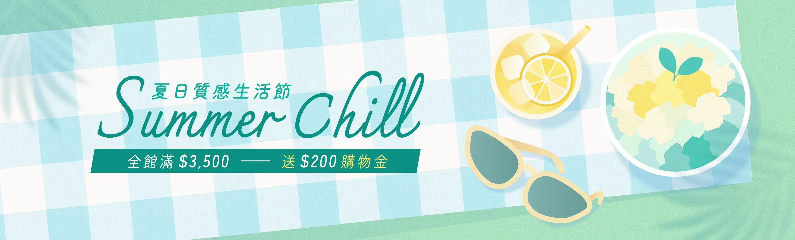
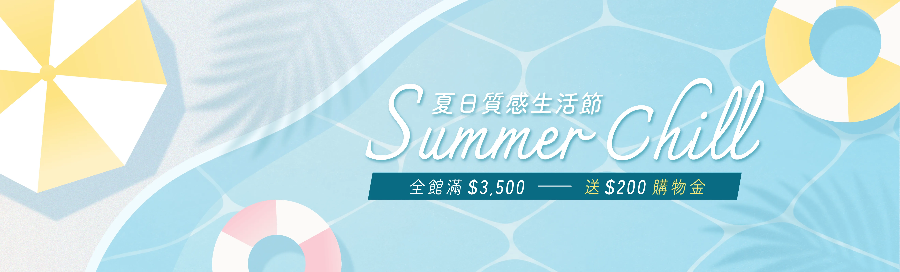

夏日生活節主打季節感與輕鬆氛圍。以清爽的色調與插畫風格重新包裝檔期，讓品牌在夏季維持鮮明而一致的視覺記憶。
從主視覺 KV 出發，延伸成官網與社群的多種版位素材，讓夏季檔期在各個觸點都有統一而清爽的視覺印象，也方便行銷團隊快速套用。
廣告素材
延伸到社群的多版位廣告，搭配檔期節奏投放。




夏日生活節主打季節感與輕鬆氛圍。以清爽的色調與插畫風格重新包裝檔期，讓品牌在夏季維持鮮明而一致的視覺記憶。
從主視覺 KV 出發，延伸成官網與社群的多種版位素材，讓夏季檔期在各個觸點都有統一而清爽的視覺印象，也方便行銷團隊快速套用。
延伸到社群的多版位廣告，搭配檔期節奏投放。